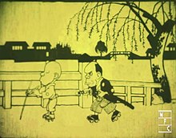

Историята на японската анимация
Предшественици
Емакимоно и каге се смятат за предшественици на японската анимация. Емакимоно е разпространено през XI век. Пътуващи разказвачи на истории разказвали легенди и анекдоти, докато емакимоно се разгръщало отдясно наляво в хронологичен ред. Кагее е популярно през периода Едо и произхожда от играта на сенки в Китай. Хартиената пиеса, наречена камишибай, се появява през XII век и остава популярна в уличния театър до 30-те години на XX век.

Куклите от театъра Бунраку и гравюрите Укийо-е се смятат за предшественици на героите на повечето японски анимации. И накрая мангата е силно вдъхновение за японското аниме. Манга писателите Кицава Ракутен и Окамото Ипей използват филмови елементи в своите ленти.
Пионери
Анимацията в Япония започва в началото на XX в., когато режисьорите започват да експериментират с техники, въведени за първи път във Франция, Германия, САЩ и Русия.
За най-ранна японска анимация се смята Katsudō Shashin от 1907 г., частна творба на неизвестен автор. Тя продължавала 3 секунди, докато просто един човек пише нещо на дъска и си сваля шапката. През 1917 г. започват да се появяват първите професионални и публично показвани творби; аниматори като Ōten Shimokawa, Seitarō Kitayama и Jun'ichi Kōuchi, считани за "бащите на аниме", създават множество филми, най-старият от които е Namakura Gatana на Kōuchi.
Кадър от " Namakura Gatana " (1917 г.) - най-старият запазен японски късометражен анимационен филм, създаден за кината.
Много от ранните творби са загубени с разрушаването на склада на Shimokawa по време на голямото земетресение в Канто през 1923 г. Аниме индустрията e била принудена да започне отначало.
Японската анимация страда от конкуренцията на чуждестранни продуценти, като Дисни, и много аниматори, сред които Нобуро Ōфуджи и Ясуджи Мурата, продължават да работят с по-евтината изрязана анимация, а не с кел-анимация. Други творци, сред които Кендзо Масаока и Мицуйо Сео, въпреки това постигат голям напредък в техниката, възползвайки се от покровителството на правителството, което наема аниматори за производството на късометражни филми с образователна цел и за пропаганда.
Първият аниме филм със звук е Chikara to Onna no Yo no Naka от 1933 г., късометражен филм, продуциран от Масаока.
Много други обещаващи творци на аниме се появяват един след друг, но с наближаването на войната стоките са в изключителен недостиг, тъй като настроението в страната става милитаристично.
Първият пълнометражен аниме филм е Momotaro: Sacred Sailors от 1945 г., продуциран от Сео със спонсорството на Японския императорски флот.
Скоро след края на войната Генералният щаб на съюзническата окупация събира 100 художници на аниме в бомбардираните руини на Токио, за да създадат Shin Nihon Dōgasha или New Japan Animation Company. Целта е да се улесни разпространението на окупационната политика, като артистите да създадат аниме в прослава на демокрацията.
Много от художниците обаче са силно независими и териториални и компанията е раздирана от разногласия още от самото начало. Проектът се отклонява от курса и в крайна сметка се разпада.
През 50-те години на 20 век се разпространяват кратки, анимирани реклами, създадени за телевизията.
През тези години, когато Япония започва да се възстановява от катастрофалната война, Хироши Ōкава, президент на филмовата компания Tōei, вижда филма на Дисни "Снежанка" от 1937 г. Той е поразен от великолепните цветове на филма. През 1956 г. той построява модерно студио - бял дворец с климатик, както го наричали хората, и основава Tōei Dōga (сега Tōei Animation). Амбицията му е да се превърне в "Дисни на Изтока".
Tōei Dōga избира за свой първи филм Hakujaden. Изпращат изследователски екип в САЩ и канят няколко експерти да пътуват до Япония като наставници. В резултат на това те успяват да овладеят системата на Дисни за " assembly-line production ". Наемат екип от нови служители, които усъвършенстват уменията си, докато произвеждат филма под ръководството на ветерани аниматори като Мори Ясуджи и Дайкухара Акира.
Първият пълнометражен филм на Tōei Dōga, Hakujaden, излиза на екран през октомври 1958 г. Той е базиран на китайска приказка.
Модерната ера
През 1960г. се почвява първият аниме филм, излъчен по телевизията – Three Tales. А през 1961-64г. се почвява първият аниме телевизионен сериал, наречен Instant History.
Ранен и влиятелен успех има Astro Boy от 1963-66г., телевизионен сериал, режисиран от Тезука по едноименната му манга. Сериалът се превръща в неочакван хит, поставяйки началото на бум на аниметата и период на силна конкуренция за телевизионната аудитория.
Успехът поставя началото на нов вид аниме индустрия. Много аниматори от Mushi Production на Тезука по-късно основават големи аниме студия (включително Madhouse, Sunrise и Pierrot). Тезука е наричан още „богът на мангата“
През 70-те години на ХХ век нараства популярността на мангата, много от които по-късно са анимирани. Работата на Тезука - и на други пионери в тази област - вдъхновява характеристики и жанрове, които остават основни елементи на анимето и до днес. Например жанрът на гигантските роботи (известен още като " mecha") се оформя при Тезука, развива се в жанра на суперроботите при Го Нагай и други, а в края на десетилетието е революционизиран от Йошиюки Томино, който развива жанра на истинските роботи. Аниме поредици за роботи като Gundam и Super Dimension Fortress Macross се превръщат в незабавна класика през 80-те години на ХХ век, а жанрът остава един от най-популярните през следващите десетилетия. Икономическият балон на 80-те години стимулира нова ера на високобюджетни и експериментални аниме филми, сред които Nausicaä of the Valley of the Wind от 1984г., Royal Space Force: Крилете на Хоннеамизе от 1987г. и Акира от 1988г.
Neon Genesis Evangelion от 1995г., телевизионен сериал, продуциран от Gainax и режисиран от Хидеаки Ано, поставя началото на друга ера на експериментални аниме заглавия, като Ghost in the Shell от 1995г. и Cowboy Bebop от 1998г. През 90-те години на ХХ век аниме започва да привлича по-голям интерес и в западните страни. Сред най-големите международни успехи са Sailor Moon и Dragon Ball Z, които са дублирани на повече от 12 езика по света.
От 2000-те години насам все повече аниме произведения са адаптации на леки романи и визуални романи. успешни примери са "The Melancholy of Haruhi Suzumiya“ и „Fate/stay night“.
През 2003 г. "Spirited Away", игрален филм на Студио Гибли, режисиран от Хаяо Миязаки, печели наградата "Оскар" за най-добър анимационен филм на 75-ите награди "Оскар". По-късно той става най-печелившият аниме филм, като печели повече от 355 милиона долара.
Demon Slayer: Kimetsu no Yaiba the Movie: Mugen Train става най-печелившият японски филм и един от най-печелившите филми в света за 2020 г. Той става и най-бързо печелившият филм в японското кино, защото за 10 дни печели 10 милиарда йени (или 95,3 млн. долара; 72 млн. паунда).